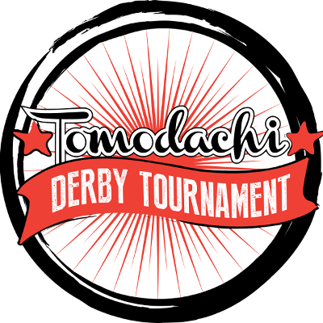
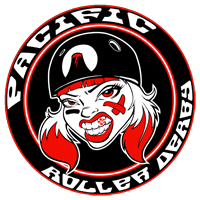
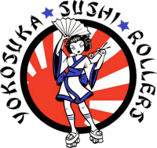

Last year, the Asia-Pacific Region saw its first ever Roller Derby Tournament, hosted in Okinawa. Whilst the Japan Open was a huge success, the host leagues were keen to hold another one, with even more direct control from the leagues and skaters themselves.

This year's Tomodachi Derby Tournament is the result - another two day tournament, now hosted by the new Japan Derby Tournament Committee, a collective of the involved Japanese leagues. As with the previous Tournament, the Tomodachi also serves a practical benefit to all the teams involved, giving somewhat geographically isolated teams a chance to play those from other areas.
We'll be bringing you more info with interviews with the attending leagues in the run up to the event on the 24th to 26th of March, (at Okinawa Comprehensive Sport Park), but we're starting (as with EuroClash) with an overview of the competitors... (a timetable is available on our technical annex, here).
WFTDA-Sanctioned Division
Pacific Roller Derby
Pacific Roller Derby are one of the oldest of the cluster of Hawaiian teams, dating from 2008, and a member of WFTDA since 2009! Due to the geographical factor, they mostly play the other Islands teams, especially at the yearly "Battle of the Islands" tournament. Based in the Islands' Capital, Honolulu, Pacific are currently 305th in the WFTDA Rankings (344th by FTS), partly, we suspect, simply due to not having had much opportunity to play non-Hawaiian teams. The Tomodachi will be their first fixtures against non-HI leagues since 2014!
 Fairbanks Rollergirls
Fairbanks Rollergirls
Hailing from their namesake in Alaska, Fairbanks Rollergirls are another member of the "Alaskan Derby" set alongside last year's Japan Open competitors, Juneau (who memorably attended with only 6 skaters!). A WFTDA member since 2011, the league has hosted the Alaskan "United We Roll" tournament for the last two years. We rate them at 1137th out of all teams (male and female, A and B) in the World which can be rated, whilst FTS places them 331st out of all WFTDA teams (a much smaller set).
 Devil Dog Derby Dames
Devil Dog Derby Dames
Local Okinawan Derby league, Devil Dog Derby Dames, (868th SRDRank), were a competitor at the Japan Open last year, although failed to defeat the non-Japanese teams in the WFTDA Division. (Their Home Team, competing in the Unsanctioned Division, defeated exhibition team Nippon Senbatsu.) The year before that, DDDD managed a win over fellow Okinawa league Kokeshi, which they'll be looking to repeat this time.
 Kokeshi Roller Dolls
Kokeshi Roller Dolls
The first league in Okinawa, Kokeshi Roller Dolls, (700th SRD Rank) were hosts of the Japan Open last year, as well as organising hosting for the Tomodachi Tournament as part of the Japan Roller Derby Tournament Committee. At the Japan Open, they took a win over Alaska's Juneau Roller Derby; we will see if they managed to repeat the feat against Fairbanks this time around.
Tokyo Roller Girls
The first league in "mainland" Japan, Tokyo Roller Girls, (745th SRD Rank) faired as well as the Devil Dog Derby Dames at the last tournament. However, they've had a busy home season since then, with all three of their home teams bouting each other, and recruitment has been strong. (TRG skaters have also been behind much of the activity of Women's Roller Derby Japan, the governing body for the Japanese Women's National Team, including their impressively active outreach in the last year.)
Men's Division
 Glenmore Reservoir Dogs
Glenmore Reservoir Dogs
Hailing from Calgary, Canada, Glenmore Reservoir Dogs (Chinook City Men's Roller Derby) are the 17th ranked MRDA team in the world (65th SRD Rank), and are the men's component of Chinook City Roller Derby. Perhaps most recently known on the international stage as hosts of the 2016 Men's Roller Derby World Cup, the league as a whole also regularly host the annual "Flat Track Fever" (women's derby) tournament. Last year, the Reservoir Dogs themselves competed at the Mayday Mayhem (Colorado) and the O-Town Throwdown (Ontario), taking second place at the former.
 NinJapan Rollers
NinJapan Rollers
The Japanese Men's National Team, and still the only Men's league in Japan, NinJapan Rollers have fairly frequently competed against the other Japanese teams (especially Tokyo), but have rarely had the chance to play non-National teams from other locations. In the 2016 MRDWC, NinJapan placed 17th, although their performance was very close to that of Puerto Rico, one place above them. The NinJapan Rollers have also (partly due to necessity) actively promoted Roller Derby throughout Japan, and have a comprehensive "off-season" training and recruitment system to build up their pool of skaters.
Unsanctioned Division
Yokosuka Sushi Rollers
A Tokyo Roller Girls "Home Team", this is the Sushi Rollers' first appearance as a travel team, let alone their first tournament. Based in and around United States Fleet Activities Yokosuka naval base, the Sushi Rollers were the founding team of Tokyo Roller Girls, and remain one of the strongest in intraleague contests. It remains to be seen how they will fare in their first bouts away from Honshu.
 Pan-Asian Spring Rollers
Pan-Asian Spring Rollers
The Pan-Asian Spring Rollers are a collaboration between the other (non-Japanese) East Asian Roller Derby leagues, with members from Beijing Roller Derby, Shanghai Roller Girls, Hong Kong Roller Derby and Bangkok Roller Derby. Several of these leagues participated in the first ever Roller Derby bout in
China last year (hosted by Beijing), and so collaboration to attend the Tomodachi seems natural.
 Team WRDJ
Team WRDJ
Team "Women's Roller Derby Japan" is a the open-subscription exhibition team, run by the committee for . It comprises skaters from the Neon Roller Monsters (Tokyo Roller Girls' Japanese-nationals-team), Tokyo Three Rollers (Tokyo's Open-To-All/Coed Team), Kokeshi Roller Dolls, Devil Dog Derby Dames, and a single skater from Hawaii's Echo City Knockouts (of Kailua-Kona).